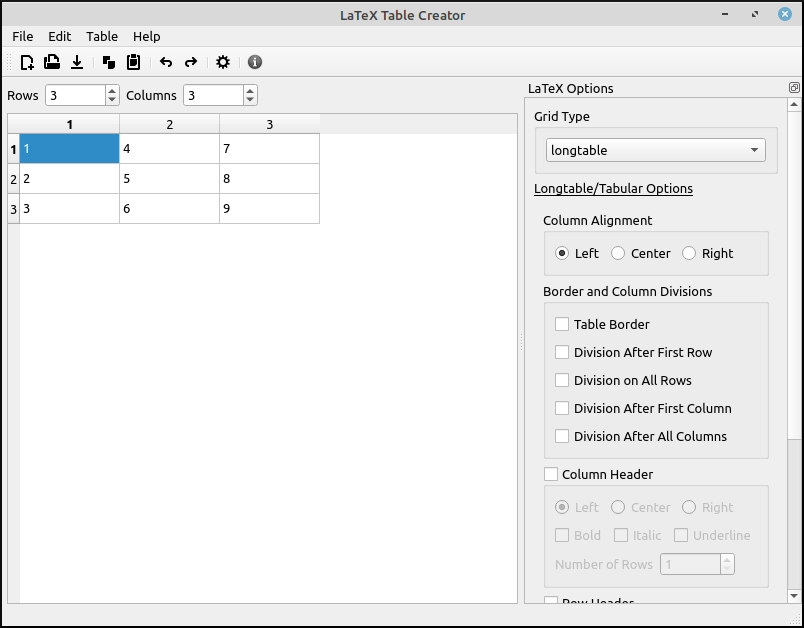

Program Layout¶
On the left is the data grid where you can type in or copy and paste data for conversion to LaTeX. This grid works like a standard spreadsheet but without any calculation abilities. Above the table are spinners that allow the user to resize the grid. These do not change the size of the grid until the value is selected by either pressing enter or the spinner losing “focus”. The additional rows and columns are added to the bottom and right respectively.
On the right is the LaTeX Options window. This will be discussed in more detail in the LaTeX Export Options section. The options here depend on the grid type that is selected. When this drop-down box is changed the options for that type of LaTeX grid will be displayed. These options will be used when the user selects to copy the LaTeX code to the clipboard. This options window can be moved to the left side of the program frame by a click and drag. Similarly you can undock it from the main program window in the same way.
